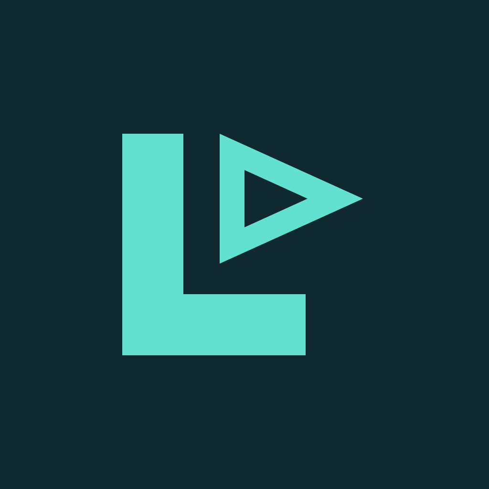

<!doctype html>
<html lang="ru">
<meta charset="utf-8"><meta name="viewport" content="width=device-width, initial-scale=1">
<title>LSPTube</title>
<link rel="stylesheet" href="screen.css">
<main>

<h1>LSPTube</h1>
<p id="status" role="status" aria-live="polite">Подготавливаем просмотр…</p>
<details><summary>Подробности запуска</summary><pre id="state"></pre></details>
<button id="retry" type="button">Повторить запуск</button>
<p class="hint">После подготовки откроется телевизионный интерфейс YouTube.</p>
</main>
<script src="start.js"></script>
<script>document.getElementById('retry').onclick = function () { location.reload(); }; document.getElementById('retry').focus();</script>
</html>
